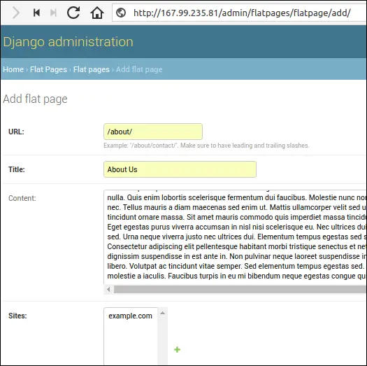

Deploying Django Project to DigitalOcean
Last updated on July 27, 2020
This chapter provides step by step guide to deploy Django projects to the DigitalOcean server.
DigitalOcean is one of the leaders VPS provider and their plans are very inexpensive - starting at just $5 per month.
If you don't have a DigitalOcean account, use this link to sign up and you will get $10 free credit.
The git repository of the Django project used in this chapter is available here. But you can also follow along with your own project if you want to.
Creating Droplet #
Login to your DigitalOcean account and you will be taken to the dashboard page.
Click the "Create" button at the top of the page and select Droplets.
In the Create Droplets page, under the Choose an image section select Ubuntu 16.04.
Select size of droplet:
Choose the region where the server will be located:
Additional options and SSH keys are optional.
Give a name to your droplet and hit the Create button.
Once the droplet is created you will receive an email containing the credentials required to login to the server.
Connecting to the Server #
To connect to the server start the terminal and type the following command:
$ ssh root@167.99.235.81
Note: Windows user can use PuTTY SSH client to connect to the server.
If you are logging in for the first time, you will be prompted for a password change.

Creating a User with limited access #
You should never run applications as root user because if an attacker broke into your application then he instantly gains access to the whole system as a root user.
Further, a root user is very powerful full and thus can perform any action, even if it leads to a broken system. Do you want to format disks? or delete the /usr directory, just execute the command and it's done. When you are root the system assumes you know what are doing.
For this reason, most applications in Linux is run as system users with restricted access.
To add an additional security layer some distributions ship with root access disabled. To perform the administrative action you will have to elevate privileges using the sudo command.
To create a new user enter the following command:
$ adduser django
You will be asked for a password and some optional details.
Next, add the user to the sudo group by executing the following command:
gpasswd -a django sudo
Now, this user has the ability to execute administrative commands.
To login with your newly created user type su followed by the username:
su django
Change your current working directory to the user's home directory using the cd command:
$ cd
In the next step, we will update our system and install some necessary packages.
Installing PIP, PostgreSQL and Nginx #
To begin with, update the system using the following command:
1 2 | $ sudo apt-get update
$ sudo apt-get upgrade
|
Ubuntu 16.04 comes preinstalled with Python 3.5 so we don't need to install Python. However, you do need to install pip.
PIP #
To install PIP type the following:
$ sudo apt-get install python3-pip
Virtualenv #
Just like we did in the development, we will use virtualenv to create a virtual environment. Install virtualenv by typing:
$ pip3 install virtualenv
PostgreSQL #
PostgreSQL is the preferred database in the Django community. To install it type:
$ sudo apt-get install postgresql postgresql-contrib
After the installation database server will start automatically. To test the status of the server type:
$ sudo service postgresql status
The output will be like this:
1 2 3 4 5 6 7 8 9 | ● postgresql.service - PostgreSQL RDBMS
Loaded: loaded (/lib/systemd/system/postgresql.service; enabled; vendor preset: enabled)
Active: active (exited) since Fri 2018-05-18 13:33:21 UTC; 1h 54min ago
Main PID: 20416 (code=exited, status=0/SUCCESS)
CGroup: /system.slice/postgresql.service
May 18 13:33:21 djangobin-ubuntu systemd[1]: Starting PostgreSQL RDBMS...
May 18 13:33:21 djangobin-ubuntu systemd[1]: Started PostgreSQL RDBMS.
May 18 13:33:26 djangobin-ubuntu systemd[1]: Started PostgreSQL RDBMS.
|
Nginx #
Nginx is a high-performance web server with very low footprint. We will use Nginx as a proxy server and to serve static files. To install it by type:
$ sudo apt-get install nginx
Once installed, Nginx will start automatically. We can check the status of the Nginx server by typing:
$ sudo service nginx status
The output will be something like this:
1 2 3 4 5 6 7 8 9 10 | ● nginx.service - A high-performance web server and a reverse proxy server
Loaded: loaded (/lib/systemd/system/nginx.service; enabled; vendor preset: enabled)
Active: active (running) since Fri 2018-05-18 15:17:51 UTC; 9min ago
Main PID: 22691 (nginx)
CGroup: /system.slice/nginx.service
├─22691 nginx: master process /usr/sbin/nginx -g daemon on; master_process on
└─22692 nginx: worker process
May 18 15:17:51 djangobin-ubuntu systemd[1]: Starting A high performance web server and a reverse proxy server...
May 18 15:17:51 djangobin-ubuntu systemd[1]: Started A high performance web server and a reverse proxy server.
|
We can also test whether Nginx is running or not by directly requesting a page from it. Open your browser and visit http://167.99.235.81/ (replace 167.99.235.81 with your IP). You should get a page like this:
RabbitMQ #
Install RabbitMQ:
$ sudo apt-get install rabbitmq-server
Creating Database and User #
When you install PostgreSQL, it automatically creates a user named postgres to perform administrative tasks.
Before we do anything, let's login with this account via psql and create a new database.
$ sudo -u postgres psql
The output will be like this:
1 2 3 4 5 | psql (9.5.12)
Type "help" for help.
postgres=#
postgres=#
|
Create a new database by typing:
1 2 3 | postgres=# CREATE DATABASE djangobin;
CREATE DATABASE
postgres=#
|
Next, create a new user by typing:
1 2 3 4 | postgres=#
postgres=# CREATE ROLE db_user WITH LOGIN PASSWORD 'password' CREATEDB;
CREATE ROLE
postgres=#
|
Finally, grant all privileges on database djangobin to db_user:
Creating Virtual Environment and Setting up Project #
To clone the repository type the following command:
$ git clone https://github.com/overiq/djangobin.git
This will create a directory named djangobin inside your current working directory. Change the current working directory to djangobin using the cd command and create a new virtual environment:
1 2 | $ cd djangobin
$ virtualenv env
|
Once done, activate the virtual environment and cd into the django_project directory (the same place where manage.py is located).
1 2 | $ source env/bin/activate
$ cd django_project/
|
Next, install the dependencies from the requirements file.
$ pip install -r requirements.txt
Since we are using PostgreSQL database in production, we need to install PostgreSQL database adapter for Python, called psycopg2.
$ pip install psycopg2
Create a JSON file to store sensitive configuration.
$ nano djangobin-secrets.json
And add the following code to it:
djangobin/django_project/djangobin-secrets.json
1 2 3 4 5 6 7 8 9 10 11 12 | {
"SECRET_KEY": "rj3vhyKiDRNmth75sxJKgS9JP8Gp7SpsS9xAlvBMTXW3Z6VTODvvFcV3TmtrZUbGkHBcs$",
"DATABASE_NAME": "djangobin",
"DATABASE_USER": "db_user",
"DATABASE_PASSWORD": "password",
"DATABASE_HOST": "127.0.0.1",
"DATABASE_PORT": "5432",
"EMAIL_HOST_USER": "apikey",
"EMAIL_HOST": "smtp.sendgrid.net",
"EMAIL_HOST_PASSWORD": "TW.qQecgRphQDa3TkLLlj18pqA.5Xrjod3G8XXojH45W4loxAsktdY3Nc",
"EMAIL_PORT": 587
}
|
Make sure to replace database credentials and API keys appropriately.
At this point, if you try to execute ./manage.py file you will get an error because Django doesn't know where your setting file is located:
Specify the settings file location temporarily using the export command:
export DJANGO_SETTINGS_MODULE=django_project.settings.prod
With this command, we have put our application in production mode.
To create all the necessary tables in the djangobin database run migrate command:
$ ./manage.py migrate
Create a superuser for the project by typing:
1 2 3 4 5 6 | $ ./manage.py createsuperuser
Username (leave blank to use 'django'): admin
Email address: admin@mail.com
Password:
Password (again):
Superuser created successfully.
|
Next, create a guest user and set its is_active attribute to False, so that the account can't be used to login.
1 2 3 4 5 6 7 8 9 10 11 12 13 14 15 16 17 18 19 20 21 22 23 24 25 26 27 28 | $ ./manage.py createsuperuser
Username (leave blank to use 'django'): guest
Email address: guest@mail.com
Password:
Password (again):
Superuser created successfully.
$
$
$ ./manage.py shell
Python 3.5.2 (default, Nov 23 2017, 16:37:01)
[GCC 5.4.0 20160609] on linux
Type "help", "copyright", "credits" or "license" for more information.
(InteractiveConsole)
>>>
>>> from django.contrib.auth.models import User
>>>
>>> u = User.objects.get(username="guest")
>>>
>>> u.is_active
True
>>>
>>> u.is_active = False
>>>
>>> u.save()
>>>
>>> u.is_active
False
>>>
|
As said before, we will serve static files via Nginx server. To collect all the static files of the project in the static directory type the following command:
$ ./manage.py collectstatic
Gunicorn #
Nginx will face the outside world and will serve static files. However, it can't communicate to Django application; it needs something that will run the application, feed it requests from the web, and return responses. This is where Gunicorn comes into the play.
Install Gunicorn by typing:
$ pip install gunicorn
To server our application via Gunicorn type the following command:
1 2 3 4 5 6 7 | $ gunicorn -w 3 -b 0.0.0.0:8000 django_project.wsgi
[2018-05-19 07:07:32 +0000] [25653] [INFO] Starting gunicorn 19.8.1
[2018-05-19 07:07:32 +0000] [25653] [INFO] Listening at: http://0.0.0.0:8000 (25653)
[2018-05-19 07:07:32 +0000] [25653] [INFO] Using worker: sync
[2018-05-19 07:07:32 +0000] [25656] [INFO] Booting worker with pid: 25656
[2018-05-19 07:07:32 +0000] [25658] [INFO] Booting worker with pid: 25658
[2018-05-19 07:07:32 +0000] [25659] [INFO] Booting worker with pid: 25659
|
This command starts Gunicorn with three worker processes and binds the socket to 0.0.0.0 address. By default, Gunicorn only listens on the local interface (i.e 127.0.0.1), which means you can't access your work from other computers on the network. To tell Gunicorn to listen on all interfaces bind the socket to 0.0.0.0.
Open your browser and navigate to http://167.99.235.81:8000/. You should see a page like this:
Our application appears to be broken. That's expected because we are not serving static files yet.
Setting up Nginx #
Gunicorn is up and running, now we need to configure Nginx to pass the requests to it.
Start by creating a server configuration file in the /etc/nginx/sites-available/ directory:
$ sudo nano /etc/nginx/sites-available/djangobin
Next, add the following configuration to the file:
/etc/nginx/sites-available/djangobin
1 2 3 4 5 6 7 8 9 10 11 12 13 14 15 16 17 | server {
server_name 167.99.235.81;
access_log off;
location /static/ {
alias /home/django/djangobin2/django_project/static/;
}
location / {
proxy_set_header Host $http_host;
proxy_pass http://127.0.0.1:8000;
proxy_set_header X-Forwarded-Host $server_name;
proxy_set_header X-Real-IP $remote_addr;
add_header P3P 'CP="ALL DSP COR PSAa PSDa OUR NOR ONL UNI COM NAV"';
}
}
|
Replace 167.99.235.81 with your IP and path to the static directory to match your own file system.
To enable this configuration create a symbolic link in the sites-enabled folder.
$ sudo ln -s /etc/nginx/sites-available/djangobin /etc/nginx/sites-enabled/djangobin
Test the configuration file syntax:
1 2 3 | $ sudo nginx -t
nginx: the configuration file /etc/nginx/nginx.conf syntax is ok
nginx: configuration file /etc/nginx/nginx.conf test is successful
|
Finally, restart the server for the changes to take effect.
$ sudo service nginx restart
Now, we are ready to test whether everything is working or not.
First off, start the celery worker along with celery beat by typing:
$ celery -A django_project worker -l info -B
Hit Ctrl+Z, followed by bg to put the process into the background. Then, start the Gunicorn by typing:
$ gunicorn -w 3 -b 127.0.0.1:8000 django_project.wsgi
Note that this time we are binding the socket to listen on the local interface (i.e 127.0.0.1) because this time Nginx will face the outside world instead of Gunicorn.
Open your browser and visit http://167.99.235.81/. You should see the index page of DjangoBin like this:
If you try to visit About or EULA flatpage you will get 404 error because these pages do not yet exist in the database. To create these pages login to Django admin site by visiting http://167.99.235.81/admin/.
Enter user and password we created earlier in this chapter.
Click on the "Add" link in front of "Flat pages" and add About and EULA page as follows:


While we are at it, let's update the domain name in sites framework (django.contrib.sites), so that the sitemap framework can generate correct links.
Visit site list page at http://<your_ip_address>/admin/sites/site/. Click the domain name to edit and enter your server IP address in the Domain name and Display name fields, as follows:
Hit the save button to update the changes.
At last, visit the Contact page and submit a message. All the admins listed in ADMINS setting will receive an email as follows:
Things are working as expected but what would happen if the gunicorn or celery gets killed for some reason or DigitalOcean restarts your droplet after performing some maintenance?
In that case, users will see 502 Bad Gateway error:
We can prevent such errors by using a process monitoring tool called Supervisor.
Monitoring Process with Supervisor #
Supervisor is a tool which allows us to monitor processes. Its job is to make sure certain processes keep running. If the process dies or gets killed for some reason, the Supervisor will start it automatically.
Install Supervisor by typing the following command:
$ sudo apt-get install supervisor
Supervisor will start automatically after the installation. We can check it's status by typing:
1 2 3 4 5 6 7 8 9 10 11 12 13 14 15 | $ sudo service supervisor status
● supervisor.service - Supervisor process control system for UNIX
Loaded: loaded (/lib/systemd/system/supervisor.service; enabled; vendor preset: enabled)
Active: active (running) since Sat 2018-05-19 15:27:28 UTC; 1min 16s ago
Docs: http://supervisord.org
Main PID: 592 (supervisord)
CGroup: /system.slice/supervisor.service
└─592 /usr/bin/python /usr/bin/supervisord -n -c /etc/supervisor/supervisord.conf
May 19 15:27:28 djangobin-ubuntu systemd[1]: Started Supervisor process control system for UNIX.
May 19 15:27:28 djangobin-ubuntu supervisord[592]: 2018-05-19 15:27:28,830 CRIT Supervisor running a
May 19 15:27:28 djangobin-ubuntu supervisord[592]: 2018-05-19 15:27:28,831 WARN No file matches via
May 19 15:27:28 djangobin-ubuntu supervisord[592]: 2018-05-19 15:27:28,847 INFO RPC interface 'super
May 19 15:27:28 djangobin-ubuntu supervisord[592]: 2018-05-19 15:27:28,847 CRIT Server 'unix_http_se
May 19 15:27:28 djangobin-ubuntu supervisord[592]: 2018-05-19 15:27:28,848 INFO supervisord started
|
With Supervisor installed, we now have access to echo_supervisord_conf command to create configuration files.
The configuration file is a Windows-INI-style file, which defines the program to run, how to handle output, environment variables to pass to programs and so on.
When Supervisor starts, it automatically reads configurations from /etc/supervisor/conf.d/ directory.
Create a new configuration file by typing:
$ echo_supervisord_conf > ./djangobin.conf
And then move it to /etc/supervisor/conf.d/ directory using the mv command:
$ sudo mv djangobin.conf /etc/supervisor/conf.d/
If you open djangobin.conf file, you will find that it contains lots of sections and comments (lines starting with ;). Delete all the sections except the supervisor section at the top of the file. At this point, the file should look like this:
/etc/supervisor/conf.d/djangobin.conf
1 2 3 4 5 6 7 8 9 | [supervisord]
logfile=/tmp/supervisord.log ; (main log file;default $CWD/supervisord.log)
logfile_maxbytes=50MB ; (max main logfile bytes b4 rotation;default 50MB)
logfile_backups=10 ; (num of main logfile rotation backups;default 10)
loglevel=info ; (log level;default info; others: debug,warn,trace)
pidfile=/tmp/supervisord.pid ; (supervisord pidfile;default supervisord.pid)
nodaemon=false ; (start in foreground if true;default false)
minfds=1024 ; (min. avail startup file descriptors;default 1024)
minprocs=200 ; (min. avail process descriptors;default 200)
|
The next step is to add one or more [program:x] section in order for the Supervisor to know which programs to start and monitor. The x in the program section refers to the arbitrary unique label given to every section. This label will be used to manage the program.
The following table lists some common options we can define inside the [program] section.
| Option | Description | Required |
|---|---|---|
command |
This option specifies the path of the program to run. | Yes |
directory |
It specifies the directory where Supervisor will cd into before running the program |
No |
autostart |
If set to true tells Supervisor to start the program when the system boots. |
No |
autorestart |
If set to true tells Supervisor to start the program if it dies or gets killed. |
No |
stdout_logfile |
The file to store the standard output of the process. | No |
stderr_logfile |
The file to store the standard error of the process. | No |
Open djangobin.conf file and add the following three [program] section towards the end of the file:
/etc/supervisor/conf.d/djangobin.conf
1 2 3 4 5 6 7 8 9 10 11 12 13 14 15 16 17 18 19 20 21 22 23 24 25 | [program:gunicorn]
command=/home/django/djangobin2/env/bin/gunicorn --access-logfile - --workers 3 --bind 127.0.0.1:8000 django_project.wsgi:application
directory=/home/django/djangobin2/django_project
autostart=true
autorestart=true
stderr_logfile=/var/log/gunicorn.err.log
stdout_logfile=/var/log/gunicorn.out.log
[program:celery_worker]
command=/home/django/djangobin2/env/bin/celery -A django_project worker -l info
directory=/home/django/djangobin2/django_project
autostart=true
autorestart=true
stderr_logfile=/var/log/celery.err.log
stdout_logfile=/var/log/celery.out.log
[program:celery_beat]
command=/home/django/djangobin2/env/bin/celery -A django_project beat -l info
directory=/home/django/djangobin2/django_project
autostart=true
autorestart=true
stderr_logfile=/var/log/celery_beat.err.log
stdout_logfile=/var/log/celery_beat.out.log
|
We also want Supervisor to pass DJANGO_SETTINGS_MODULE environment variable to all the three process. To do so, add environment option at the end of [supervisord] section as follows:
/etc/supervisor/conf.d/djangobin.conf
1 2 3 4 5 6 7 8 9 10 | [supervisord]
logfile=/tmp/supervisord.log ; (main log file;default $CWD/supervisord.log)
logfile_maxbytes=50MB ; (max main logfile bytes b4 rotation;default 50MB)
logfile_backups=10 ; (num of main logfile rotation backups;default 10)
loglevel=info ; (log level;default info; others: debug,warn,trace)
pidfile=/tmp/supervisord.pid ; (supervisord pidfile;default supervisord.pid)
nodaemon=false ; (start in foreground if true;default false)
minfds=1024 ; (min. avail startup file descriptors;default 1024)
minprocs=200 ; (min. avail process descriptors;default 200)
environment=DJANGO_SETTINGS_MODULE="django_project.settings.prod"
|
Tell Supervisor to load this new configuration type the following two commands:
1 2 3 4 5 6 7 8 | $ sudo supervisorctl reread
celery_beat: available
celery_worker: available
gunicorn: available
$ sudo supervisorctl update
celery_beat: added process group
celery_worker: added process group
gunicorn: added process group
|
You will have to execute these two commands every time you modify the configuration file.
Now, all our programs are up and running. At any time, you can check the status of programs by typing:
1 2 3 4 5 | $ sudo supervisorctl status
celery_beat RUNNING pid 6027, uptime 1:44:03
celery_worker RUNNING pid 6028, uptime 1:44:03
gunicorn RUNNING pid 6029, uptime 1:44:03
supervisor>
|
If we start supervisorctl program without passing any argument, it will start an interactive shell which allows us to control processes currently managed by Supervisor.
1 2 3 4 5 | $ sudo supervisorctl
celery_beat RUNNING pid 6027, uptime 1:48:42
celery_worker RUNNING pid 6028, uptime 1:48:42
gunicorn RUNNING pid 6029, uptime 1:48:42
supervisor>
|
As you can see, in interactive mode supervisorctl starts by printing the status of currently managed programs.
Once you are inside the interactive shell, to see the available commands, type help:
1 2 3 4 5 6 7 8 9 10 | supervisor>
supervisor> help
default commands (type help <topic>):
=====================================
add exit open reload restart start tail
avail fg pid remove shutdown status update
clear maintail quit reread signal stop version
supervisor>
|
Now, we can stop, start and restart process using the corresponding command followed by the program label.
1 2 3 4 5 6 7 8 9 10 11 | supervisor>
supervisor> stop gunicorn
gunicorn: stopped
supervisor>
supervisor> start gunicorn
gunicorn: started
supervisor>
supervisor> restart gunicorn
gunicorn: stopped
gunicorn: started
supervisor>
|
To get the status of all the running processes type status:
1 2 3 4 | celery_beat RUNNING pid 6027, uptime 5:51:00
celery_worker RUNNING pid 6028, uptime 5:51:00
gunicorn RUNNING pid 12502, uptime 0:02:06
supervisor>
|
We get also read the contents of the log file using the tail command:
1 2 3 4 5 6 7 8 | supervisor>
supervisor> tail gunicorn
27.0.0.1 - - [20/May/2018:13:56:42 +0000] "GET / HTTP/1.0" 200 10327 "-" "Mozilla/5.0 (Windows NT 10.0; Win64; x64) AppleWebKit/537.36 (KHTML, like Gecko) Chrome/63.0.3239.132 Safari/537.36"
127.0.0.1 - - [20/May/2018:13:56:42 +0000] "GET / HTTP/1.0" 200 10327 "-" "Mozilla/5.0 (Windows NT 10.0; Win64; x64) AppleWebKit/537.36 (KHTML, like Gecko) Chrome/63.0.3239.132 Safari/537.36"
127.0.0.1 - - [20/May/2018:13:56:43 +0000] "POST /GponForm/diag_Form?images/ HTTP/1.0" 404 92 "-" "Mozilla/5.0 (Windows NT 10.0; Win64; x64)"
127.0.0.1 - - [20/May/2018:13:57:31 +0000] "GET / HTTP/1.0" 200 10327 "-" "Mozilla/5.0 (Windows NT 10.0; WOW64) AppleWebKit/537.36 (KHTML, like Gecko) Chrome/51.0.2704.103 Safari/537.36"
supervisor>
|
By default, the tail command reads from stdout. Here is how we can read from stderr.
1 2 3 4 5 6 7 8 9 10 11 12 13 14 | supervisor>
supervisor> tail gunicorn stderr
[2018-05-20 17:29:28 +0000] [12492] [INFO] Worker exiting (pid: 12492)
[2018-05-20 17:29:28 +0000] [12493] [INFO] Worker exiting (pid: 12493)
[2018-05-20 17:29:28 +0000] [12490] [INFO] Worker exiting (pid: 12490)
[2018-05-20 17:29:29 +0000] [12487] [INFO] Shutting down: Master
[2018-05-20 17:29:29 +0000] [12502] [INFO] Starting gunicorn 19.8.1
[2018-05-20 17:29:29 +0000] [12502] [INFO] Listening at: http://127.0.0.1:8000 (12502)
[2018-05-20 17:29:29 +0000] [12502] [INFO] Using worker: sync
[2018-05-20 17:29:29 +0000] [12505] [INFO] Booting worker with pid: 12505
[2018-05-20 17:29:29 +0000] [12507] [INFO] Booting worker with pid: 12507
[2018-05-20 17:29:29 +0000] [12508] [INFO] Booting worker with pid: 12508
supervisor>
|
Finally, we can stop, start and restart all the processes at once as follows:
1 2 3 4 5 6 7 8 9 10 11 12 13 14 15 16 17 18 19 20 21 | supervisor>
supervisor> stop all
celery_beat: stopped
gunicorn: stopped
celery_worker: stopped
supervisor>
supervisor>
supervisor> start all
celery_beat: started
celery_worker: started
gunicorn: started
supervisor>
supervisor>
supervisor> restart all
celery_beat: stopped
gunicorn: stopped
celery_worker: stopped
celery_beat: started
celery_worker: started
gunicorn: started
supervisor>
|
Once you are done hit Ctrl+C or type quit to exit the supervisorctl shell.
Supervisor is now monitoring all our processes. If any process dies or gets killed for some reason supervisor will start the process automatically.
As a test, try rebooting the droplet using the sudo reboot command. You will find that all the processes will start automatically on boot.
Congratulations, you have successfully deployed the DjangoBin project.
Load Comments